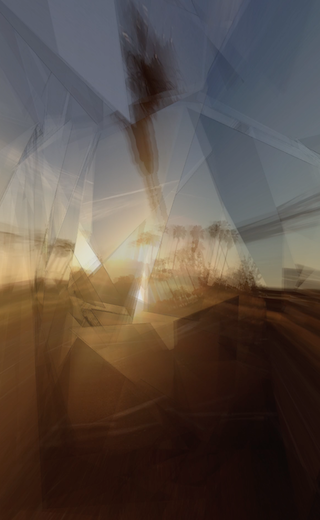

with Jieliang(Rodger) Luo (http://rodgerluo.com)
Quoting Rodger's description:
Fragments is a multi-viewpoint video aiming to reformulate 2d image from 3d space and to create new approaches for future storytelling. This project provides a unique experience for the audience to observe a real-time multi-viewpoint video, which is produced by mixing three different videos using OpenGL shader functionality and a lenticular film. The rendering of each video involves capturing one common object from many different perspectives.
In terms of the object, the process begins with randomly taking segmentations in 3D space followed by a modified Convex Hull algorithm to create an asymmetric structure with different regions of the image (the scene) textured on each panel. Using fragmented pieces of the scene introduces a method in cubism: combining different perspectives in one view. Each fragment transforms in time with controlled parameters, providing a dynamic scene. With fragments of the scene not only changing by themselves but also by the position of the audience, this work shows tries to reveal hidden aesthetics of a scene. By stitching fragments that change over time and space, one could observe different aspects the original scene.
Video 1: https://vimeo.com/171193854
Video 2: https://vimeo.com/191299579
